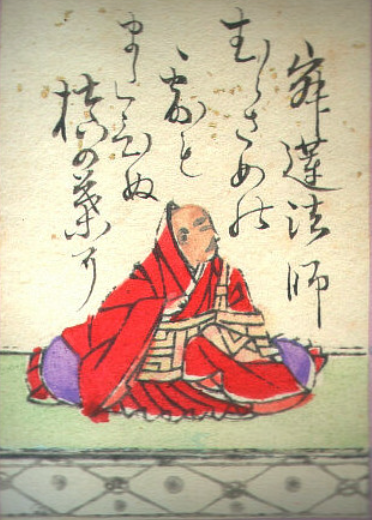

ホーム
はじめての
百人一首
一字決まり札を覚えよう！
面白い覚え札を覚えよう！
ランダムクイズに挑戦！！
腕試し100問に挑戦！！
ホーム
Page 2
一字決まりとは？？
一字決まりは、上の句の一文字目を聞けば、下の句を特定できる札だよ！
一字決まりは七首存在するんだ！
七首の上の句の一文字目を合わせて
むすめふさほせ
と覚えよう！
次へ
戻る
page 2
選択画面
八十七番 む
チェック1
十八番 す
チェック1
五十七番 め
チェック1
二十二番 ふ
チェック1
七十番 さ
チェック1
九十一番 ほ
チェック1
七十七番 せ
チェック1
ホームへ戻る
page 3
page 4

寂蓮法師
じゃくれんほうし
村雨の
露もまだひぬ 槇の葉に
霧たちのぼる 秋の夕ぐれ
上の句
むらさめの
つゆもまだひぬ まきのはに
下の句
きりたちのぼる あきのゆうぐれ
選択画面へ戻る
page 3
page 5
藤原敏行朝臣
ふじわらのとしゆきあそん
住の江の
岸に寄る波 よるさへや
夢の通ひ路 人目よくらむ
上の句
すみのえの
きしによるなみ よるさへや
下の句
ゆめのかよいぢ ひとめよくらん
選択画面へ戻る
page 3
page 6
紫式部
むらさきしきぶ
めぐり逢ひて
見しやそれとも わかぬ間に
雲がくれにし 夜半の月かな
上の句
めぐりあひて
みしやそれとも わかぬまに
下の句
くもがくれにし よはのつきかな
選択画面へ戻る
page 3
page 7
文屋康秀
ぶんやのやすひで
吹くからに
秋の草木の しをるれば
むべ山風を あらしといふらむ
上の句
ふくからに
あきのくさきを しをるれば
下の句
むべやまかぜを あらしといふらむ
選択画面へ戻る
page 3
page 8
良暹法師
りょうぜんほうし
さびしさに
宿をたち出でて ながむれば
いづこも同じ 秋の夕暮
上の句
さびしさに
やどをたちいでて ながむれば
下の句
いづこもおなじ あきのゆうぐれ
選択画面へ戻る
page 3
page 9
後徳大寺左大臣
ごとくだいじのさだいじん
ほととぎす
鳴きつる方を ながむれば
ただ有明の 月ぞ残れる
上の句
ほととぎす
なきつるかたを ながむれば
下の句
ただありあけの つきぞのこれる
選択画面へ戻る
page 3
page 10
崇徳院
すとくいん
瀬を早み
岩にせかるる 滝川の
われても末に 逢はむとぞ思ふ
上の句
せをはやみ
いはにせかるる たきがはの
下の句
われてもすゑに あはむとぞおもふ
選択画面へ戻る
ホーム
page1
七十四番
二十四番
六十五番
七十八番
五十三番
五十八番
六番
八十九番
ホームへ戻る
ホーム
page1
憂かりける
人を初瀬の 山おろしよ
はげしかれとは 祈らぬものを
上の句
うかりける
ひとをはつせの やまおろしよ
下の句
はげしかれとは いのらぬものよ
覚え方
うっかり ハゲ
選択画面へ戻る
page1
page2
このたびは
ぬさもとりあえず 手向山
紅葉の錦 神のまにまに
上の句
このたびは
ぬさもとりあえず たむけやま
下の句
もみじのにしき かみのまにまに
覚え方
このたびは まにまに
選択画面へ戻る
page2
page3
恨みわび
ほさぬ袖だに あるものを
恋に朽ちなむ 名こそ惜しけれ
上の句
うらみわび
ほさぬそでだに あるものを
下の句
こいにくちなん なこそおしけれ
覚え方
恨み わさび 故意に
選択画面へ戻る
page3
page4
淡路島
かよふ千鳥の 鳴く声に
いく夜寝覚めぬ 須磨の関守
上の句
あわじしま
かようちどりの なくこえに
下の句
いくよねざめぬ すまのせきもり
覚え方
淡路島 いくよ～！
選択画面へ戻る
page4
page5
嘆きつつ
ひとり寝る夜の 明くる間は
いかに久しき ものとかは知る
上の句
なげきつつ
ひとりねるよの あくるまは
下の句
いかにひさしき ものとかはしる
覚え方
嘆きの イカ
選択画面へ戻る
page5
page6
有馬山
猪名の笹原
風吹けば いでそよ人を 忘れやはする
上の句
ありまやま
いなのささはら かぜふけば
下の句
いでそよひとを わすれやはする
覚え方
有馬山 いでよ！
選択画面へ戻る
page6
page7
かささぎの
渡せる橋に おく霜の
白きをみれば 夜ぞふけにける
上の句
かささぎの
わたせるはしに おくしもの
下の句
しろきをみれば よぞふけにける
覚え方
かささぎは 白い
選択画面へ戻る
page7
page8
玉の緒よ
たえなばたえねながらへば
忍ぶることの 弱りもぞする
上の句
たまのをよ
たえなばたえね ながらへば
下の句
しのぶることの よわりもぞする
覚え方
玉野 しのぶちゃん
選択画面へ戻る
トップページ
ランダムクイズ
問題 1
次の問題
結果は？？
トップページへ戻る
トップページ
100問クイズ
問題 1
次の問題
結果は？？
トップページへ戻る